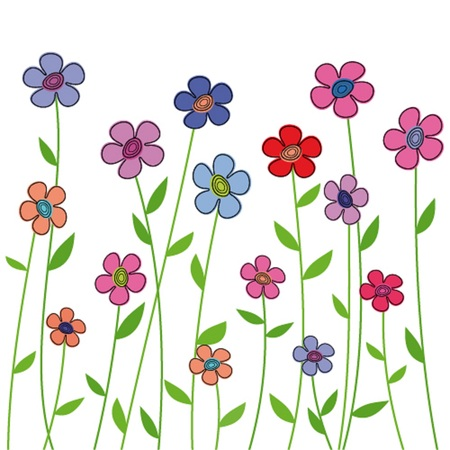

The director was long identified with ornately edited set pieces. In “The Irishman” and his latest film, the flourishes have given way to blunt truths.
Of all the haunting images and disturbing sounds that permeate Martin Scorsese’s “Killers of the Flower Moon,” none is more upsetting than the guttural cry from Mollie Burkhart (Lily Gladstone), a tortured wail of rage and grief that escapes her reserved visage when tragedy strikes. And it often does: “Killers” tells the true story, adapted from the book by David Grann, of how Mollie’s Osage community was decimated by murderous white men, who killed dozens of her tribe members for rights to their oil-rich land. Mollie’s howl of pain is not quite like any sound heard before in a Scorsese film. But in many ways, Scorsese is emulating her jarring cry in the ominous aesthetics of “Killers of the Flower Moon” itself, and of his 2019 feature, “The Irishman.”